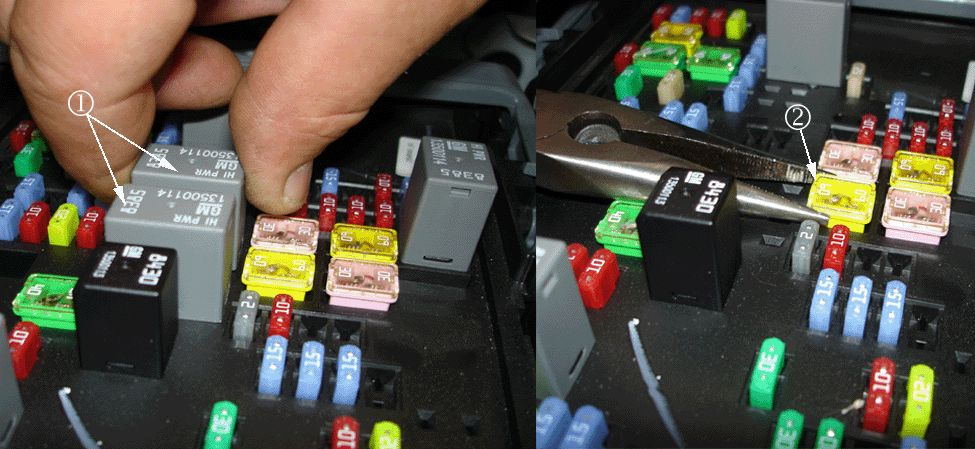
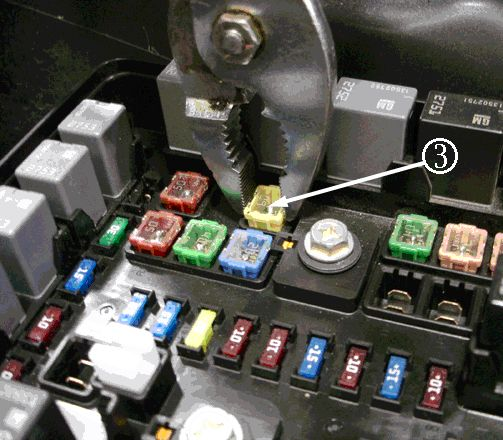

Fuse Removal
FUSE REMOVAL2007-2009 Cadillac Escalade, Escalade ESV, Escalade EXT,
2007-2009 Chevrolet Avalanche, Silverado (GMT900), Suburban, Tahoe,
2007-2009 GMC Sierra (GMT900), Yukon and Yukon XL
1. Disconnect the negative battery cable. Refer to Battery Negative Cable Disconnection and Connection in SI.
Note
The underhood fuse block is located in the engine compartment on the driver side of the vehicle. Refer to Underhood Fuse Block in the Owner's Manual for fuse information.
2. Locate the underhood bussed electrical center (UBEC).
3. Remove the UBEC cover and locate the 60 amp heated windshield washer fuse.

Note
Remove the two relays (1) next to the fuse to gain access to the fuse.
4. Remove the 60 amp heated windshield washer fuse (2) using needle-nose pliers.
5. Discard the 60 amp heated windshield washer fuse.
6. Install the two relays (1) removed in Step 4.
7. Refer to Windshield Washer Solvent Heater Removal in this bulletin. After completing the Windshield Washer Solvent Heater Removal service procedure, proceed to Step 8 in this section of the bulletin.
8. Connect the negative battery cable. Refer to Battery Negative Cable Disconnection and Connection in SI.
9. Test the operation of the windshield wiper system.
1. Ensure that the wiper system functions in low and high positions.
2. Verify that the windshield wiper/washer switch functions. The windshield wiper system should provide wiper fluid to the windshield.
3. Verify that the heated windshield washer switch does NOT flash.
10. Secure the UBEC cover on the UBEC.
11. Close the hood.
12. Make a copy of the Owner Manual Supplement, located at the back of this bulletin, and place it in the glove box.
Note
Involved vehicles that are currently in dealer/retailer new car inventory are to receive a corrected Monroney Label (MSRP window sticker). It is the responsibility of the Service Manager to ensure this label replacement occurs as soon as possible.
13. After this procedure has been performed, issue a check to the customer of record (see the Q&A section in this buleltin for additional details). Involved vehicles that are currently in dealer/retailer new or used car inventory are not eligible for a check. However, all new vehicles currently in dealer/retailer inventory will be re-invoiced with appropriate dealer credit for the elimination of this feature.
Buick Lucerne, Cadillac DTS and CTS
2006-2007 Buick Lucerne
2006-2007 Cadillac DTS
The underhood bussed electrical center is located in the vehicle's front left-hand side of the engine compartment between the engine coolant recovery bottle and rearward of the radiator support housing. The "Heated Windshield Washer" fuse is in location "JC1", which is positioned in the rear center quadrant of the UBEC.
2008-2009 Buick Lucerne and Cadillac DTS
The underhood bussed electrical center is located in the vehicle's front left-hand side of engine compartment between the engine coolant recovery bottle and rearward of the radiator support housing. The "Heated Windshield Washer" fuse is in location "F28", which is positioned in the rear inside quadrant of the UBEC.
1. Disconnect the negative battery cable. Refer to Battery Negative Cable Disconnection and Connection in SI.
2. Locate the underhood bussed electrical center (UBEC) (1).
3. Remove the UBEC cover and locate the 60 amp heated windshield washer fuse (1).
4. Remove the 60 amp heated windshield washer fuse using needle-nose pliers.
5. Discard the 60 amp heated windshield washer fuse.
6. Refer to Windshield Washer Solvent Heater Removal in this bulletin. After completing the Windshield Washer Solvent Heater Removal service procedure, proceed to Step 7 in this section of the bulletin
7. Connect the negative battery cable. Refer to Battery Negative Cable Disconnection and Connection in SI.
8. Test the operation of the windshield wiper system.
1. Ensure the wiper system functions in low and high positions.
2. Verify that the windshield wiper/washer switch functions. The windshield wiper system should provide wiper fluid to the windshield.
3. Verify that the DIC does not display the following message, "HEATING WASH FLUID WASH WIPES PENDING".
9. Secure the UBEC cover on the UBEC.
10. Close the hood.
11. Make a copy of the Owner Manual Supplement, located at the back of this bulletin, and place it in the glove box.
Note
Involved vehicles that are currently in dealer/retailer new car inventory are to receive a corrected Monroney Label (MSRP window sticker). It is the responsibility of the Service Manager to ensure this label replacement occurs as soon as possible.
12. After this procedure has been performed, issue a check to the customer of record (see the Q&A section in this bulletin for additional details). Involved vehicles that are currently in dealer/retailer new or used car inventory are not eligible for a check. However, all new vehicles currently in dealer/retailer inventory will be re-invoiced with appropriate dealer credit for the elimination of this feature.
2008-2009 Cadillac CTS
1. Disconnect the negative battery cable. Refer to Battery Negative Cable Disconnection and Connection in SI.
2. Remove the front compartment side sight shield on the passenger's side of the engine compartment (1). Refer to Front Compartment Side Sight Shield Replacement in SI.
Note
The underhood fuse block is located in the engine compartment on the passenger side of the vehicle. Refer to Underhood Fuse Block in the Owner's Manual for fuse information.
3. Locate the underhood bussed electrical center (UBEC) (2).
4. Remove the UBEC cover (2) and locate the WSW/HTR 60 amp heated windshield washer fuse.

5. Remove the WSW/HTR 60 amp heated windshield washer fuse (3) using pliers.
6. Discard the WSW/HTR 60 amp heated windshield washer fuse (3).
7. Refer to Windshield Washer Solvent Heater Removal in this bulletin. After completing the Windshield Washer Solvent Heater Removal service procedure, proceed to step 8 in this section of the bulletin.
8. Connect the negative battery cable. Refer to Battery Negative Cable Disconnection and Connection in SI.
9. Test the operation of the windshield wiper system.
1. Ensure the wiper system functions in low and high positions.
2. Verify that the windshield wiper/washer switch functions. The windshield wiper system should provide wiper fluid to the windshield.
3. Verify that the DIC does not display the following message, "HEATING WASH FLUID WASH WIPES PENDING".
10. Install the front compartment side sight shield on the passenger's side of the engine compartment (1). Refer to Front Compartment Side Sight Shield Replacement in SI.
11. Secure the UBEC cover on the UBEC.
12. Close the hood.
13. Make a copy of the Owner Manual Supplement, located at the back of this bulletin, and place it in the glove box.
Note
Involved vehicles that are currently in dealer/retailer new car inventory are to receive a corrected Monroney Label (MSRP window sticker). It is the responsibility of the Service Manager to ensure this label replacement occurs as soon as possible.
14. After this procedure has been performed, issue a check to the customer or record (see the Q&A section in this bulletin for additional details). Involved vehicles that are currently in dealer/retailer new or used car inventory are not eligible for a check. However, all new vehicles currently in dealer/retailer inventory will be re-invoiced with appropriate dealer credit for the elimination of this feature.
2006-2007 HUMMER H2
1. Open the hood and disconnect the negative battery cable. Refer to Battery Negative Cable Disconnection and Connection in SI.
Note
The underhood fuse block in the engine compartment is located on the driver's side of the vehicle near the battery. Lift the cover for access to the fuse/relay block. Refer to Underhood Fuse Bock in the Owner's Manual for fuse information.
2. Locate the under-hood bussed electrical center (UBEC).
3. Remove the UBEC cover and locate the 60 amp heated windshield washer Mega fuse.
4. Remove the two nuts (1) for the Mega fuse (2). Refer to the picture.
5. Remove the 60 amp heated windshield washer Mega fuse.
6. Discard the 60 amp heated windshield washer Mega fuse.
7. Install the two nuts back into the two studs.
8. Refer to Windshield Washer Solvent Heater Removal in this bulletin. After completing the Windshield Washer Solvent Heater Removal service procedure, proceed to step 9 in this section of the bulletin.
9. Connect the negative battery cable. Refer to Battery Negative Cable Disconnection and Connection in SI.
10. Test the operation of the windshield wiper system.
1. Ensure the wiper system functions in low and high positions.
2. Verify that the windshield wiper/washer switch functions. The windshield wiper system should provide wiper fluid to the windshield.
3. Verify that the heated windshield washer switch does NOT flash.
11. Secure the UBEC cover on the UBEC.
12. Close the hood.
13. Make a copy of the Owner Manual Supplement, located at the back of this bulletin, and place it in the glove box.
Note
Involved vehicles that are currently in dealer/retailer new car inventory are to receive a corrected Monroney Label (MSRP window sticker). It is the responsibility of the Service Manager to ensure this label replacement occurs as soon as possible.
14. After this procedure has been performed, issue a check to the customer of record (see the Q&A section in this bulletin for additional details). Involved vehicles that are currently in dealer/retailer new or used car inventory are not eligible for a check. However, all new vehicles currently in dealer/retailer inventory will be re-invoiced with appropriate dealer credit for the elimination of this feature.
2008-2009 HUMMER H2
1. Open the hood and disconnect negative battery cable. Refer to Battery Negative Cable Disconnection and Connection in SI.
Note
The underhood fuse block in the engine compartment is located on the driver side of the vehicle near the battery. Lift the cover for access to the fuse/relay block. Refer to Underhood Fuse Block in the Owner's Manual for fuse information.
2. Locate the underhood bussed electrical center (UBEC).
3. Remove the UBEC cover and locate the 60 amp heated windshield washer fuse.
4. Remove the two relays next to the fuse to gain access to the fuse.
5. Remove the 60 amp heated windshield washer fuse using needle-nose pliers.
6. Discard the 60 amp heated windshield washer fuse.
7. Install the two relays removed in Step 4.
8. Refer to Windshield Washer Solvent Heater Removal in this bulletin. After completing the Windshield Washer Solvent Heater Removal service procedure, proceed to step 9 in this section of the bulletin.
9. Connect the negative battery cable. Refer to Battery Negative Cable Disconnection and Connection in SI.
10. Test the operation of the windshield wiper system.
1. Ensure the wiper system functions in low and high positions.
2. Verify that the windshield wiper/washer switch functions. The windshield wiper system should provide wiper fluid to the windshield.
3. Verify that the heated windshield washer switch does NOT flash.
11. Secure the UBEC cover on the UBEC.
12. Close the hood.
13. Make a copy of the Owner Manual Supplement, located at the back of this bulletin, and place it in the glove box.
Note
Involved vehicles that are currently in dealer/retailer new car inventory are to receive a corrected Monroney Label (MSRP window sticker). It is the responsibility of the Service Manager to ensure this label replacement occurs as soon as possible.
14. After this procedure has been performed, issue a check to the customer of record (see the Q&A section in this bulletin for additional details). Involved vehicles that are currently in dealer/retailer new or used car inventory are not eligible for a check. However, all new vehicles currently in dealer/retailer inventory will be re-invoiced with appropriate dealer credit for the elimination of this feature.
2008-2009 Buick Enclave
2009 Chevrolet Traverse
2007-2009 GMC Acadia
2007-2009 Saturn OUTLOOK
1. Disconnect the negative battery cable. Refer to Battery Negative Cable Disconnection and Connection in SI.
Note
The underhood bussed electrical center (UBEC) is located in the engine compartment on the passenger side of the vehicle. Refer to Underhood Fuse Block in the Owner's Manual for fuse information.
2. Locate the underhood bussed electrical center (UBEC).
3. Remove the UBEC cover and locate the 60 amp heated windshield washer fuse.
Note
Remove the two relays next to the fuse to gain access to the fuse.
4. Remove the 60 amp heated windshield washer fuse using needle-nose pliers.
5. Discard the 60 amp heated windshield washer fuse.
6. Install the two relays removed in Step 4.
7. Refer to Windshield Washer Solvent Heater Removal in this bulletin. After completing the Windshield Washer Solvent Heater Removal service procedure, proceed to step 8 in this section of the bulletin.
8. Connect the negative battery cable. Refer to Battery Negative Cable Disconnection and Connection in SI.
9. Test the operation of the windshield wiper system.
1. Ensure the wiper system functions in low and high positions.
2. Verify that the windshield wiper/washer switch functions. The windshield wiper system should provide wiper fluid to the windshield.
3. Verify that the DIC does not display the following message, "HEATING WASH FLUID WASH WIPES PENDING".
10. Secure the UBEC cover on the UBEC.
11. Close the hood.
12. Make a copy of the Owner Manual Supplement, located at the back of this bulletin, and place it in the glove box.
Note
Involved vehicles that are currently in dealer/retailer new car inventory are to receive a corrected Monroney Label (MSRP window sticker). It is the responsibility of the Service Manager to ensure this label replacement occurs as soon as possible.
13. After this procedure has been performed, issue a check to the customer of record (see the Q&A section in this bulletin for additional details). Involved vehicles that are currently in dealer/retailer new or used car inventory are not eligible for a check. However, all new vehicles currently in dealer/retailer inventory will be re-invoiced with appropriate dealer credit for the elimination of this feature.